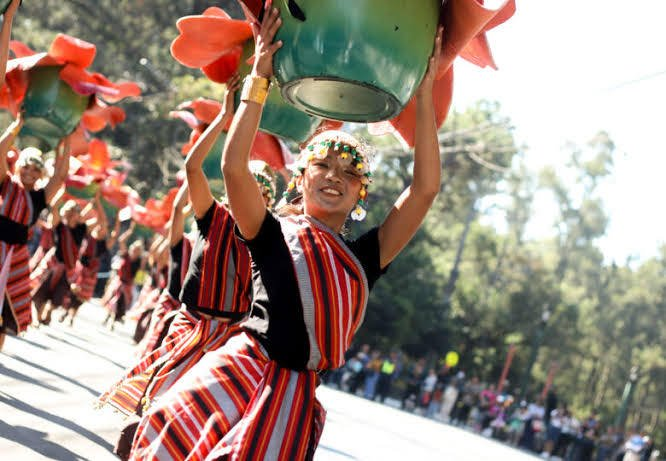

On the two big Panagbenga parade days, central Baguio stops working as a city and turns into a stage. Roads close in the middle of the night, front-row spots go before sunrise, and by mid-afternoon tens of thousands of people are trying to leave the same few streets at once. The 2023 float parade alone drew an estimated 50,000 spectators. This guide is about getting through that day well: when to wake up, which roads will be shut, where to stand, and how to get out again.
The two days in question are the Grand Street Dance Parade and the Grand Floral Float Parade, held back to back on a Saturday and Sunday near the end of the festival. In 2026 they fell on 28 February and 1 March, each starting at 8 a.m. The 2027 dates are usually confirmed around January, so check the Baguio Flower Festival Foundation's event directory before you lock in anything.
For the bigger picture, including hotels, buses and the rest of the month's events, start with our Panagbenga Festival planning guide. This one zooms in on a single morning.

The Route in One Line
Both parades follow roughly the same path. Contingents start from Panagbenga Park and the South Drive side of Upper Session Road, go down to the Session Road rotunda, continue along Lower Session Road and Magsaysay Avenue, turn onto Harrison Road, then follow Jose Abad Santos Drive and Lake Drive to the Melvin Jones Grandstand and football ground in Burnham Park, where the judged performances take place.
That gives you three very different viewing zones. Upper Session Road is where everything begins, so performers and floats arrive fresh and the crowd moves early. Lower Session and Magsaysay are the busiest stretch, with shops, steep sidewalks and the densest crowds. Harrison Road and the Burnham Park side are flatter and more open, closer to the finish where groups give their full routine.
Which Roads Close, and When
Closures change a little every year, so treat the following as a pattern rather than a promise. For the 2025 parades, the city shut South Drive, Session Road, North Drive, Kalaw Street, Harrison Road, Abad Santos Drive, Lake Drive and parts of Abanao Street and Magsaysay Avenue, along with several side streets including Perfecto, Mabini and Shanum. The closures ran from 1 a.m. to 3 p.m. on both parade days. Checkpoints sealed off the centre at 5 a.m., after which only vehicles carrying participants could get in.
What that means in practice is simple. If you are staying outside the centre, a taxi will not get you to Session Road on parade morning. Plan to be dropped at the edge of the closed zone and walk in, or better, book a room within walking distance for that weekend. The Baguio City Police Office usually posts the exact closure list and rerouting a few days before; it is worth a screenshot, since phone signals get patchy in a crowd this size.
A Parade-Day Timeline
4:00 to 5:30 a.m.
Performers report as early as 4 a.m., and serious spectators are not far behind. Front spots on Session Road start filling around 5, with some people arriving in the dark. If a curb-side view on the main stretch matters to you, this is your window. Eat something before you leave, because a breakfast queue at 7 will cost you your place.
8:00 a.m. to midday
The parade starts at 8 and takes most of the morning to pass, since each group performs along the way and dozens of contingents take part. In 2026 there were 22 street dance teams and close to 30 float entries. Expect the sun to feel strong by 10 even though the morning air is cool, and expect standing for three hours or more.
Late morning to afternoon
Once the floats reach Melvin Jones, they are usually parked on the football ground for public viewing. This is the best chance to see the flower work up close, down to individual petals and the sheer number of blooms packed into a single panel. Floats must be at least 90 percent natural flowers, and from a metre away it shows.
3:00 p.m. onwards
Roads reopen in the afternoon, and that is when the real traffic starts. Leaving on a bus the same afternoon is possible but stressful. Staying one more night makes the whole weekend calmer.
Where to Stand
The main Session Road stretch suits anyone after energy and the full show, as long as you are willing to arrive early and stay put. With the biggest crowds packed along it, this is the loudest and liveliest part of the route.
Harrison Road and the Burnham Park side are better for space and easier photos. The ground is flatter, the crowd spreads out more, and you are close to Melvin Jones for the float viewing afterwards.
The Melvin Jones Grandstand is the place for the judged performances, where groups perform their complete routines for the judges. Seating arrangements and any fees are set by the organisers each year, so ask ahead rather than assuming you can walk in.
One spot to avoid is the junction of Kalaw Street, North Drive and Session Road. The police keep it clear as an emergency lane to Baguio's hospitals, and spectators are moved away from it, so it is a poor place to wait.
What to Bring, and What to Leave
- Water and a snack you can eat standing up. Food stalls near the route are busy, and leaving your spot to buy something usually means losing it.
- A cap and sunscreen. Baguio's cool mornings fool people into skipping both.
- A light jacket for the 5 a.m. wait, which you can tie around your waist by 9.
- A fully charged phone and a small power bank, plus a meeting point agreed in advance in case your group gets separated.
- Cash in small bills for snacks and the vendors who appear along the route.
Leave large umbrellas, big bags and folding chairs behind. They block the view of the people behind you, slow down security checks and make the walk out harder. A small bag worn on the front is easier to manage in a tight crowd.
With Kids or Older Relatives
The parades are daytime, family-friendly events, but the combination of early starts, long standing and crowd pressure is tiring. Harrison Road and the Burnham Park side are kinder for children and older family members than Lower Session, which slopes and packs tightly. Write your phone number on a small card for each child, and pick a landmark you can all find again. If the day is too much, the float display at Melvin Jones is a gentler way to enjoy the flowers once the parade has passed.
Plan B if You Hate Crowds
Not everyone needs a curb-side spot. The floats stay on show at Melvin Jones after the parade, and Session Road in Bloom fills the following week with food stalls and exhibits on a road closed to traffic. The Botanical Garden is a short ride from the centre and stays much quieter. If you are still deciding whether the crowds are worth it, read is Baguio quieter and cheaper right now for how the city's busy and quiet periods compare.
And if you want to know why the dancers move the way they do before you watch them, our piece on what Panagbenga means and where it came from explains the bendian roots of the street dance. The parade makes more sense when you know what you are looking at, and it is a better morning when you have planned how to get home.
Photo credit: Panagbenga Flower Festival.

Comments
No comments yet. Been here recently? Share a tip or ask a question.
Leave a Reply